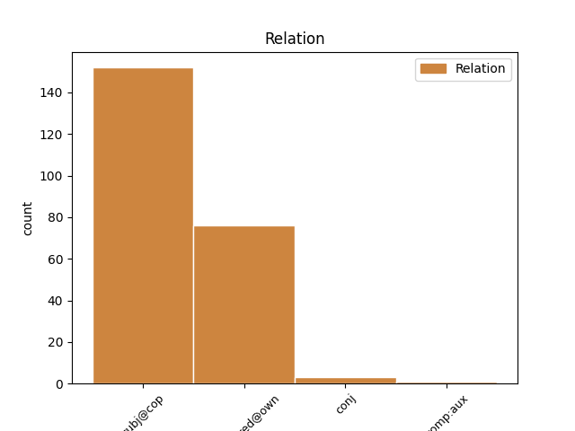
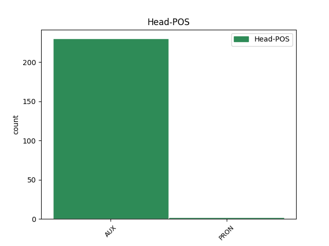
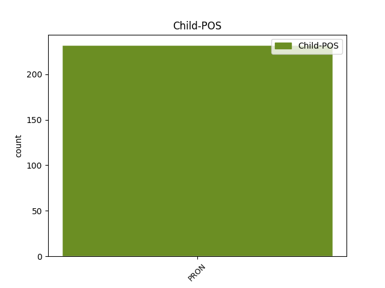

Distribution of features within this leaf



Agreement Rules sorted by frequency.
- When the dependent token is the subject(subj@cop) of the head token, and the head token is AUX and the dependent token is PRON.
1 Majuri _ _ _ _ 0 _ _ _
2 Sami _ _ _ _ 0 _ _ _
3 Aarnion _ _ _ _ 0 _ _ _
4 mukaan _ _ _ _ 0 _ _ _
5 Mikkosta _ _ _ _ 0 _ _ _
6 ei _ _ _ _ 0 _ _ _
7 ollut _ _ _ _ 0 _ _ _
8 varsinaisesti _ _ _ _ 0 _ _ _
9 kutsuttu _ _ _ _ 0 _ _ _
10 , _ _ _ _ 0 _ _ _
11 vaan _ _ _ _ 0 _ _ _
12 hän hän PRON Pron Case=Nom|Number=Sing|Person=3|PronType=Prs 14 subj@cop _ _
13 itse _ _ _ _ 0 _ _ _
14 oli olla AUX V Mood=Ind|Number=Sing|Person=3|Tense=Past|VerbForm=Fin|Voice=Act 0 _ _ _
15 puolisen _ _ _ _ 0 _ _ _
16 vuotta _ _ _ _ 0 _ _ _
17 aikaisemmin _ _ _ _ 0 _ _ _
18 ollut _ _ _ _ 0 _ _ _
19 yhteydessä _ _ _ _ 0 _ _ _
20 Puolustusvoimiin _ _ _ _ 0 _ _ _
21 , _ _ _ _ 0 _ _ _
22 mutta _ _ _ _ 0 _ _ _
23 mitään _ _ _ _ 0 _ _ _
24 tehtäviä _ _ _ _ 0 _ _ _
25 hänelle _ _ _ _ 0 _ _ _
26 ei _ _ _ _ 0 _ _ _
27 ollut _ _ _ _ 0 _ _ _
28 osoitettu _ _ _ _ 0 _ _ _
29 . _ _ _ _ 0 _ _ _
1 Maksu _ _ _ _ 0 _ _ _
2 perittäisiin _ _ _ _ 0 _ _ _
3 verotuksen _ _ _ _ 0 _ _ _
4 yhteydessä _ _ _ _ 0 _ _ _
5 riippumatta _ _ _ _ 0 _ _ _
6 siitä _ _ _ _ 0 _ _ _
7 , _ _ _ _ 0 _ _ _
8 onko _ _ _ _ 0 _ _ _
9 henkilöllä _ _ _ _ 0 _ _ _
10 televisiota _ _ _ _ 0 _ _ _
11 tai _ _ _ _ 0 _ _ _
12 tietokonetta _ _ _ _ 0 _ _ _
13 tai _ _ _ _ 0 _ _ _
14 onko olla AUX V Clitic=Ko|Mood=Ind|Number=Sing|Person=3|Tense=Pres|VerbForm=Fin|Voice=Act 0 _ _ _
15 hänellä hän PRON Pron Case=Ade|Number=Sing|Person=3|PronType=Prs 14 comp:pred@own _ _
16 maksukykyä _ _ _ _ 0 _ _ _
17 . _ _ _ _ 0 _ _ _
Disagree Examples:
1 Haluamme _ _ _ _ 0 _ _ _
2 ja _ _ _ _ 0 _ _ _
3 asetamme _ _ _ _ 0 _ _ _
4 itsellemme _ _ _ _ 0 _ _ _
5 ehtoja _ _ _ _ 0 _ _ _
6 sille _ _ _ _ 0 _ _ _
7 , _ _ _ _ 0 _ _ _
8 milloin _ _ _ _ 0 _ _ _
9 meillä minä PRON Pron Case=Ade|Number=Plur|Person=1|PronType=Prs 10 comp:pred@own _ _
10 on olla AUX V Mood=Ind|Number=Sing|Person=3|Tense=Pres|VerbForm=Fin|Voice=Act 0 _ _ _
11 oikeus _ _ _ _ 0 _ _ _
12 , _ _ _ _ 0 _ _ _
13 tilaisuus _ _ _ _ 0 _ _ _
14 ja _ _ _ _ 0 _ _ _
15 mahdollisuus _ _ _ _ 0 _ _ _
16 toteuttaa _ _ _ _ 0 _ _ _
17 sitä _ _ _ _ 0 _ _ _
18 mitä _ _ _ _ 0 _ _ _
19 elämältä _ _ _ _ 0 _ _ _
20 toivomme _ _ _ _ 0 _ _ _
21 . _ _ _ _ 0 _ _ _
1 Kiitän _ _ _ _ 0 _ _ _
2 , _ _ _ _ 0 _ _ _
3 että _ _ _ _ 0 _ _ _
4 minulla minä PRON Pron Case=Ade|Number=Sing|Person=1|PronType=Prs 5 comp:pred@own _ _
5 on olla AUX V Mood=Ind|Number=Sing|Person=3|Tense=Pres|VerbForm=Fin|Voice=Act 0 _ _ _
6 mahdollisuus _ _ _ _ 0 _ _ _
7 valita _ _ _ _ 0 _ _ _
8 . _ _ _ _ 0 _ _ _
1 Minulla minä PRON Pron Case=Ade|Number=Sing|Person=1|PronType=Prs 2 comp:pred@own _ _
2 on olla AUX V Mood=Ind|Number=Sing|Person=3|Tense=Pres|VerbForm=Fin|Voice=Act 0 _ _ _
3 fanaattinen _ _ _ _ 0 _ _ _
4 himo _ _ _ _ 0 _ _ _
5 riisua _ _ _ _ 0 _ _ _
6 joulu _ _ _ _ 0 _ _ _
7 kodista _ _ _ _ 0 _ _ _
8 aika _ _ _ _ 0 _ _ _
9 pian _ _ _ _ 0 _ _ _
10 joulun _ _ _ _ 0 _ _ _
11 jäätyä _ _ _ _ 0 _ _ _
12 taakse _ _ _ _ 0 _ _ _
13 . _ _ _ _ 0 _ _ _
1 Minulla minä PRON Pron Case=Ade|Number=Sing|Person=1|PronType=Prs 2 comp:pred@own _ _
2 oli olla AUX V Mood=Ind|Number=Sing|Person=3|Tense=Past|VerbForm=Fin|Voice=Act 0 _ _ _
3 kerran _ _ _ _ 0 _ _ _
4 ystävä _ _ _ _ 0 _ _ _
5 , _ _ _ _ 0 _ _ _
6 joka _ _ _ _ 0 _ _ _
7 teki _ _ _ _ 0 _ _ _
8 juuri _ _ _ _ 0 _ _ _
9 näin _ _ _ _ 0 _ _ _
10 . _ _ _ _ 0 _ _ _
1 Ja _ _ _ _ 0 _ _ _
2 eikös _ _ _ _ 0 _ _ _
3 sulla sinä PRON Pron Case=Ade|Number=Sing|Person=2|PronType=Prs|Style=Coll 4 comp:pred@own _ _
4 olisi olla AUX V Mood=Cnd|Number=Sing|Person=3|VerbForm=Fin|Voice=Act 0 _ _ _
5 jossain _ _ _ _ 0 _ _ _
6 puliukkoja _ _ _ _ 0 _ _ _
7 poistettavana _ _ _ _ 0 _ _ _
8 ? _ _ _ _ 0 _ _ _